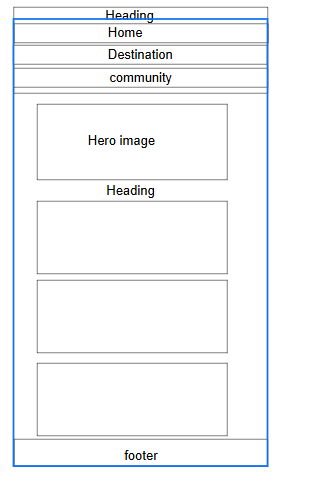
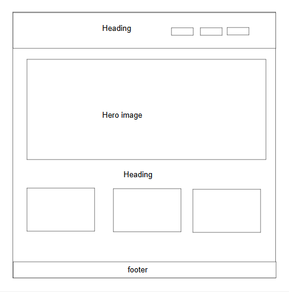

Site Plan Document
Site Name
Anwelli Explore guild
Explore Nexus is a community-driven platform that connects travelers with local experts and tour guides. The site aims to provide authentic and unique travel experiences, promoting cultural exchange and sustainable tourism.
Site Purpose
Anwelli Explore guild is a community-driven platform that connects travelers with local experts and tour guides. The site aims to provide authentic and unique travel experiences, promoting cultural exchange and sustainable tourism.
Scenarios
- What are the top-rated restaurants in the area?
- How do I join the Chamber of Commerce?
- What events are happening in the community this month?
Color Schema
The color schema for this site consists of two primary colors:
- #3498db (main color): used for headings, buttons, and accents
- #f1c40f (secondary color): used for backgrounds, highlights, and text
Typography
The typography for this site uses two primary fonts:
- Open Sans: used for headings and titles
- Lato: used for body text and paragraphs
Wireframe
Mobile View

Desktop View
